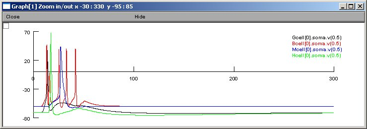
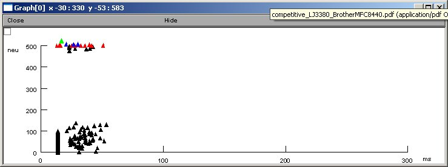

This is the readme for the model associated with the paper
Vijayalakshmi Santhakumar, Ildiko Aradi and Ivan Soltesz
Role of Mossy Fiber Sprouting and Mossy Cell Loss in
Hyperexcitability:A Network Model of the Dentate Gyrus Incorporating
Cell Types and Axonal Topography
J Neurophysiol 93: 437-453, 2005.
Mossy cell loss and mossy fiber sprouting are two characteristic
consequences of repeated seizures and head trauma. However, their
precise contributions to the hyperexcitable state are not well
understood. Because it is difficult, and frequently impossible, to
independently examine using experimental techniques whether it is the
loss of mossy cells or the sprouting of mossy fibers that leads to
dentate hyperexcitability, we built a biophysically realistic and
anatomically representative computational model of the dentate gyrus
to examine this question. The 527-cell model, containing granule,
mossy, basket, and hilar cells with axonal projections to the
perforant-path termination zone, showed that even weak mossy fiber
sprouting (10-15% of the strong sprouting observed in the pilocarpine
model of epilepsy) resulted in the spread of seizure-like activity to
the adjacent model hippocampal laminae after focal stimulation of the
perforant path. The simulations also indicated that the spatially
restricted, lamellar distribution of the sprouted mossy fiber
contacts reported in in vivo studies was an important factor in
sustaining seizure-like activity in the network. In contrast to the
robust hyperexcitability-inducing effects of mossy fiber sprouting,
removal of mossy cells resulted in decreased granule cell responses
to perforant-path activation in agreement with recent experimental
data. These results indicate the crucial role of mossy fiber
sprouting even in situations where there is only relatively weak
mossy fiber sprouting as is the case after moderate concussive
experimental head injury.
Usage:
Compile the NEURON mod files with nrnivmodl (unix) or mknrndll (mac
or mswin) and then start the network simulation with
nrngui mosinit.hoc
(unix) or double clicking on the mosinit.hoc file (mac or mswin).
Figure 7 A2,B2
For 10% sprouting (see reference) traces look similar to this

Network activity:

The initial network connections takes 5 minutes (prints to the oc
prompt window), then the network starts running and begins to generate
the above traces graph. The activity graph is created at the end
of the simulation (a little over twenty minutes to finish on a
1 GHz Linux Pentium). Note: a processor time seeded random number
generator makes every run different (for statistical analysis).